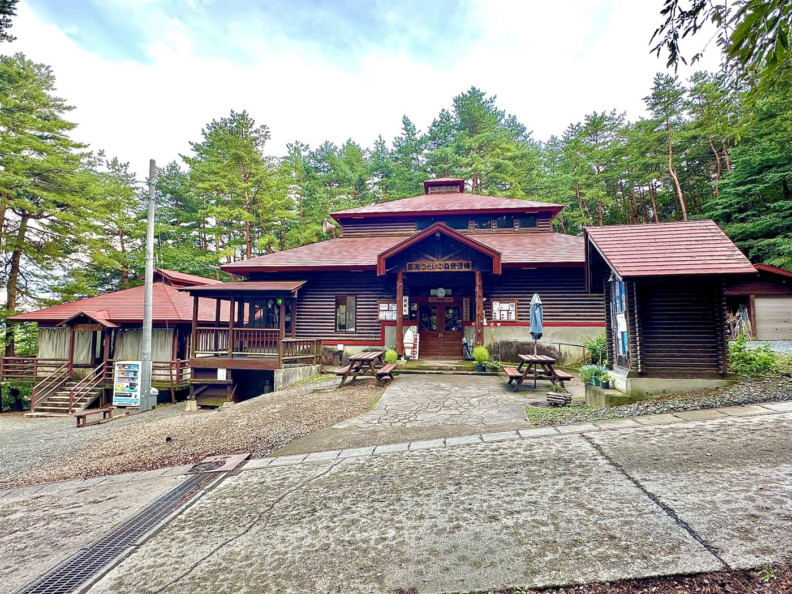

MORIOKA TSUDOI NO MORI PARK
森ではじまる、
森ではじまる、
家族のものがたり。
盛岡市都南にある自然体験型の公園「つどいの森」。キャンプ、テニス、グラウンドゴルフ、バーベキュー、木工体験——お花見の春から紅葉の秋まで、四季をまるごと遊びつくせます。
キャンプ場の営業期間は4月〜11月です
お知らせ
つどいの森からのお知らせ
イベント
「第24回あかばやし探検隊」開催中
令和8年4月〜令和9年3月、毎月第4日曜日に開催中。スケジュールと申し込み方法はイベント情報ページでご確認ください。
グラウンドゴルフ
グラウンドゴルフ大会、次回は9月17日(木)
令和8年度大会は第4回まで終了。次回第5回は9月17日(木)開催予定です。
釣り堀
釣り堀 営業中（土日祝限定）
4月26日より、土曜・日曜・祝日限定で営業中。営業時間は12時過ぎ〜15時ごろ。天候により変更となる場合があります。
はじめての方へ
つどいの森であそぶ、3つのステップ
STEP 1
あそびを決める
キャンプ、BBQ、日帰り、体験学習…施設案内から、やってみたいことを探しましょう。
STEP 2
予約する
多くの施設は3日前まで（BBQハウスは5日前まで）にお電話または直接ご来園でご予約ください。
STEP 3
森へ来園
受付は管理棟にて。当日は季節に合わせた服装・持ち物でお越しください。
つどいの森の風景
四季の楽しみ方
キャンプ場や球技施設は4月〜11月のご利用が中心です。季節ごとの見どころをチェックしてお出かけください。

春｜園内の桜

夏｜グラウンドゴルフコース

秋｜紅葉の頃の園内
つどいの森の施設
キャンプからスポーツまで

テニスコート

バーベキューハウス

オートキャンプサイト
森遊びコラム
森であそぶ様子を、少しずつ紹介しています
「あかばやし探検隊」など体験活動の一コマから、森あそびの様子をコラムとして紹介しています。まだ数は少ないですが、これから充実させていきます。

火おこし作業中！
あかばやし探検隊の一コマ。マッチを使わず、道具と工夫で火をおこす体験です。

どんぐりで作る、森の工作
拾ったどんぐりや木の実を組み合わせて、動物や置物を作る工作の様子です。

夏の川遊び
つどいの森周辺の沢や川で、水に親しむ夏の定番プログラムの様子です。